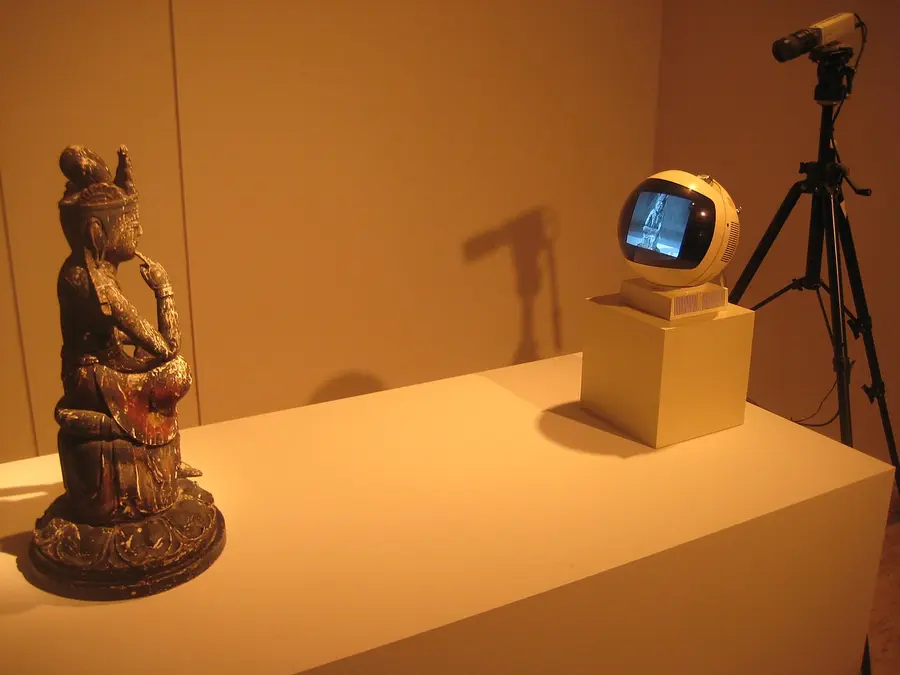
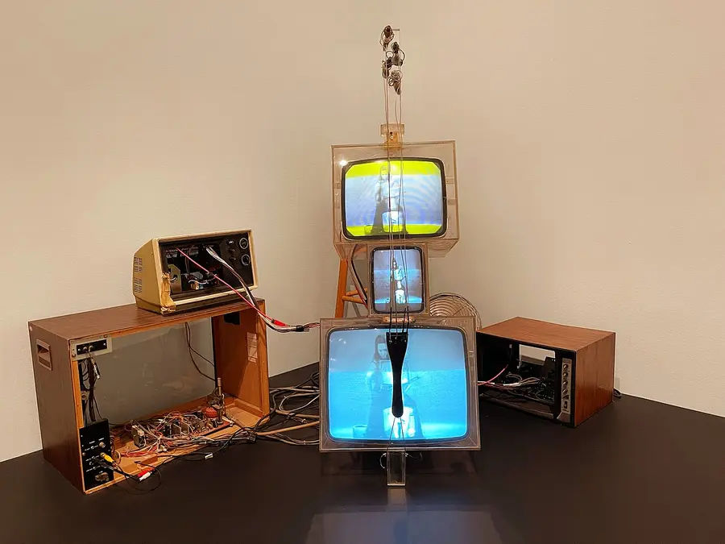
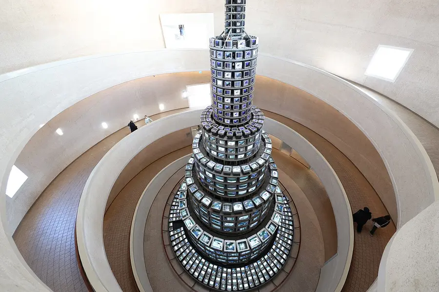
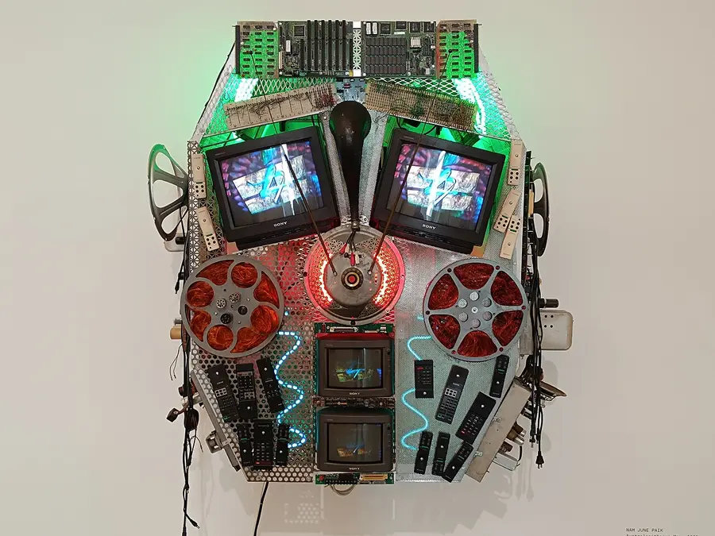

Visual Art · Media & Technology · History of Art
Nam June Paik
In the 1960s, the television was the most powerful machine in the house. Families sat in front of it every night and watched whatever the networks sent them. Nam June Paik asked a different question: what if you stopped watching the TV and started playing it, like an instrument? He pushed magnets against the screen, rewired the insides, stacked TVs into robots and towers, and in the process invented a whole new kind of art: video art.
From Seoul to the World
Paik was born in Seoul, Korea, in 1932, the youngest of five children in a wealthy family. As a boy he studied classical piano. When the Korean War broke out in 1950, his family fled, first to Hong Kong and then to Japan.
At the University of Tokyo he studied music and art history, and he wrote his thesis on Arnold Schoenberg, a composer who broke the old rules of harmony. In 1956 Paik moved to Germany to keep studying music. That was where everything changed.
Paik lived on three continents and spoke Korean, Japanese, German, and English. He settled in New York in 1964 and worked there for most of his life. He died in 2006, and today many people call him the "father of video art."
How Music Turned Into Video
In 1958 Paik met the American composer John Cage. Cage wrote music out of silence, chance, and everyday noise. His most famous piece, 4′33″, has a pianist sit at the piano for four and a half minutes without playing a note, so the "music" is whatever sounds happen in the room. Paik said the meeting split his life into "before Cage" and "after Cage." If a silent room could be music, what else could be art?
Paik joined Fluxus, a loose group of artists who staged wild, funny performances. Paik smashed violins, pushed a piano over, and even cut off John Cage's necktie during a concert. Like the Dadaists 40 years earlier, Fluxus artists wanted to shake people out of treating art as something polite and far away.
Then in 1963, at a gallery in Wuppertal, Germany, Paik showed something new. He scattered 13 used television sets around the room, and each one had been rewired or tampered with so its picture was twisted, squeezed, or turned into lines. Visitors could interfere with some of them. The show was called Exposition of Music – Electronic Television. Paik was treating the TV the way Cage treated the piano, as an instrument to be played in ways no one had tried.
How does an old TV actually make a picture?
Was Paik an engineer?
Try It: Paik's TV Lab
Paik never stopped at one trick. He wired sets together, stacked techniques, and played them live. This lab gives you a wall of TVs and four of his techniques. Switch any technique on for any TV, stack them, and let them move by themselves.
- Magnet TV (1965). Electrons are electrically charged, so a magnet pushes the moving beam sideways. Lines of the picture bend and swirl around the magnet. Flip the poles and the swirl reverses.
- Zen for TV (1963). A cathode ray tube steers its beam with two sets of electromagnets. One sweeps it sideways across every row, the other sweeps it down the screen. Cut the sideways sweep and every row lands in the same column: a single vertical line. Cut the downward sweep too and you get one dot.
- Décollage. Décollage is the opposite of collage: art made by peeling and tearing away. Artists like Paik's Fluxus friend Wolf Vostell used it for ripped posters that show older layers underneath. Here you peel the top picture to reveal the one below.
- Signal scramble. A rewired or damaged set tears rows sideways, rolls the picture up or down, and lets the red, green, and blue layers drift apart. Paik did this on purpose.
To play: click a TV to select it, switch techniques on in the panel below it, and drag on the screen. The ∿ Modulate switch on each technique makes it move on its own. Techniques work together: a swirling, peeling, tearing TV is one click each.
Selected TV
Drag on a screen, or click it and use the arrow keys (hold Shift to peel).
Why does flipping the poles make the swirl turn the other way?
Why does the Zen line get brighter as it gets thinner?
Why call it "Zen"?
Does the order of the techniques matter?
Can I do this to a TV at home?
Is this really décollage, or just a glitch filter?
Famous Works
As you look at each piece, ask the question Paik kept asking: who is in control of the screen?

This is closed-circuit video: the camera feeds the screen live, with no broadcast. The Buddha, a symbol of quiet meditation, gazes at a machine that shows only itself. Is it meditating or watching TV? Paik left that for viewers to decide.

Paik often worked with the cellist Charlotte Moorman. With TV Cello, "playing the television" was no longer a figure of speech. Music and moving pictures became a single performance.

Built for the 1988 Seoul Olympics, this is installation art on a huge scale. The number 1,003 stands for October 3, Korea's National Foundation Day. It is shaped like a Korean pagoda, an ancient temple tower, rebuilt out of modern machines.

From Robot K-456 onward, Paik built dozens of robot figures from old TVs, radios, and cameras, often named after family members or famous people. They make technology feel human, and sometimes a little silly.
He Saw the Internet Coming
In 1974, twenty years before most people had heard of the internet, Paik wrote a report predicting that TV, telephone, and computers would join into one network. He called it an "electronic superhighway," a phrase that was later used everywhere as the "information superhighway." He imagined ordinary people sending their own video to each other instead of only receiving what big networks broadcast. That sounds a lot like YouTube or a video call.
On New Year's Day 1984 he produced Good Morning, Mr. Orwell, a live TV show linking New York and Paris by satellite, with musicians and artists performing together across the ocean. It answered George Orwell's novel 1984, which imagined TV as a tool for spying on people. Paik wanted to show that TV could connect people instead. In 1995 he built Electronic Superhighway, a wall-sized map of the United States outlined in neon, with 336 TV screens playing clips about each state. It is on permanent view at the Smithsonian American Art Museum in Washington, D.C.
Every artist who works with screens, projections, live video, or code today (music-video directors, projection-mapping crews, game artists, and you in the showcase) is working in the territory Paik opened up. His main lesson was that you don't have to accept technology the way it comes out of the box. You can take it apart, play it, and make it say something new.
Discussion: who controls your screen?
Practice Problems
Check what you know about Paik's life, his big ideas, and the science inside his TVs.
Easy1. What was Nam June Paik's main artistic material?
Easy2. Which composer, famous for a "silent" piece, changed how Paik thought about art?
Medium3. Why does a magnet bend the picture on an old tube TV?
Medium4. Paik was born in 1932 and made Magnet TV in 1965. How old was he?
Medium5. In TV Buddha, a camera sends its picture straight to a screen nearby with no broadcast. What is this setup called?
Medium6. The More, the Better uses 1,003 screens. If Paik had arranged exactly 1,003 screens into floors of 59 each, how many floors would the tower have?
Challenge7. Paik coined "electronic superhighway" in 1974. His Electronic Superhighway map of the U.S. was built in 1995. How many years apart are they?
Challenge8. Which statement best sums up Paik's big idea about technology?